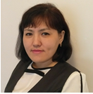

Саркулова Салтанат Калабековна
Дата рождения: 25.10.1984
Место рождения: г. Тараз
Национальность: казашка
Контактная информация
Адрес: г. Тараз, ул. Жетысу, 11
Телефон: 8 (747) 258 84 23, 8 (777) 932 94 90
E-mail: sarkulova.1984@mail.ru
Образование
- ТарГУ им. М.Х. Дулати, 2006 — бакалавр биологии
- ТарМПУ, 2020 — магистр педагогических наук по специальности «Биология»
Педагогический стаж
17 лет 6 месяцев
Квалификационная категория
Педагог-исследователь
Опыт работы
- СШ №11, 2007–2018 — учитель биологии
- Школа-интернат «Дарын», 2018–2025 — учитель биологии
Курсы повышения квалификации
- «Педагог XXI века», английский язык, уровень A1 — 2018 г. Ustaz
- «Инновационная биология», 2018 г. ТарМПИ
- «Биология» и «Естествознание» — «Орлеу», 2018
- Pre-intermediate course, Interlingua, 2021
- Тренерские курсы ЦПМ, 2020–2021
Публикации
- Ұлы дала ұстазы, 2020
- «Бөбек», VI конференция
- Тәжірибе алаңы, 2021
Достижения
- Видеолекция «Фотосинтез», 2019
- Олимпиады «Зейін», «Кио», дипломы 1–2 степени (2020–2022)
Языки
Казахский — родной, Русский — свободно, Английский — разговорный
Навыки
Windows, Kundelik, MS Office, Excel, Интернет. Коммуникабельная, трудолюбивая.